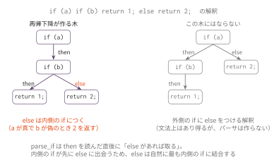

再帰下降パーサ② — 文を解析する
今日のゴール
F2 の式パーサを継承して、文（return / break / continue / if / while / for /
ブロック / 式文）の解析を追加する。
37本の文コーパスで、AST が スキャフォールド の Parser と完全一致することを golden test で確認する。
この回の位置づけ
| 項目 | 内容 |
|---|---|
| 必須の前提 | F2 |
| 推奨の前提 | — |
| 改変しない | mycc.py、scaffold/ |
| 編集する | myparser.py |
| 完了条件 | check.py の全 Step が PASS になり、golden.py が37本の文コーパスで AST の完全一致を報告する |
| コマ数 | 1 |
| 備考 | フロントエンド発展シリーズの第3回。F2 が未完成だとこの回のテストは動かない。宣言（int x; など）と関数定義は F4 で扱う |
StmtParser は、自分が F2 で作った ExprParser を importlib で継承する。
本編の CodegenNN と同じ「前回の自分を継承する」方式である。
この回のブロックは「文だけを含むブロック」である。
文は先頭のトークンで決まる
式は10段の優先順位の階段が必要だった。文はずっと素直で、 先頭のトークンを見るだけで種類が確定する。
| 先頭のトークン | 文の種類 | 呼ぶ関数 |
|---|---|---|
return |
return文 | parse_return |
break / continue |
ジャンプ文 | parse_break / parse_continue |
if |
条件分岐 | parse_if |
while / for |
ループ | parse_while / parse_for |
{ |
ブロック | parse_block |
| それ以外 | 式文（空文 ; 含む） |
parse_exprstmt |
スケルトンの parse_stmt は、この表のとおりのディスパッチとして完成済みである。
迷う要素がないので、先読みは現在のトークン1つで足りる（LL(1)）。
単純な文 — ; を食べ忘れない
return / break / continue / 式文は、EBNF がそのままコードになる。
'return' [ expr ] ';'def parse_return(self):
self.pos += 1 # 'return'
if self.consume_if(';'):
return Node(ND_RETURN) # return;
expr = self.parse_expr()
self.expect(';')
return Node(ND_RETURN, operand=expr) # return expr;ここで parse_expr は F2 で自分が書いた関数である。
文のパーサは、式の中身を一切知らずに「式を1個読んでくれ」と依頼するだけでよい。
文と式で層が分かれているおかげである。
ありがちなバグは ; の食べ忘れである。
expect(';') を忘れると、その ; が次の文の先頭に残り、
1つずれた場所で意味不明なエラーになる。
ブロック — 文の再帰の輪
block ::= '{' { stmt } '}'ブロックは文の並びであり、ブロック自身も文である。
つまり parse_block → parse_stmt → parse_block の再帰の輪ができる。
式のときの ( expr ) とまったく同じ構図で、これが { { return 1; } } のような
入れ子を自然に処理する。
} が来るまで parse_stmt を繰り返して stmts リストに集め、
Node(ND_BLOCK, stmts=...) を作る。
入力が尽きても } が来ない場合のエラーも忘れずに。
if と dangling else
if_stmt ::= 'if' '(' expr ')' stmt [ 'else' stmt ]then 側は parse_stmt で読む。ブロックとは限らず、単文でも入れ子の if でもよい。
そして then を読んだ直後に、else があれば取る。実装はこれだけである。
then = self.parse_stmt()
else_ = None
if self.consume_if('else'):
else_ = self.parse_stmt()ここで、コマ4 の資料にあった「else は最も内側の if に結合する（最近傍優先）」
という規則の種明かしができる。

if (a) if (b) return 1; else return 2; を読むとき、
else に最初に出会うのは内側の if を読んでいる最中の parse_if である。
「else があれば貪欲に取る」だけで、最近傍優先が特別な処理なしに実現される。
曖昧になりうる文法が、実装の素直な形によって一意に決まっている例である。
また、else if という専用の構文がないことも実装から分かる。
else の後の stmt がたまたま if 文である、というだけである
（コマ4「else if の扱い」の実装側）。
while と for — 省略可能要素は None
while は if から else を除いた形で、新しい要素はない。
for は3つの要素がそれぞれ省略できる。
for_stmt ::= 'for' '(' [expr] ';' [expr] ';' [expr] ')' stmt省略の判定は「次の区切り記号が来ていたら中身なし」で行う。
| 要素 | 省略の判定 | 省略時 |
|---|---|---|
| init | 次が ; か |
None |
| cond | 次が ; か |
None |
| step | 次が ) か |
None |
コマ5 の資料に「省略された部分は AST 上で None になる」とあった。
その None を作っているのがこのコードである。
for (;;) は3要素とも None の ND_FOR になり、
コード生成側（コマ5）が「cond が None なら beqz を出さない」と対応していた。
Node の形
S 式では、文は次のように表示される（parse_viewer と同じ）。
(if (cond (var "x")) (then (return (num 1))))
(for (init none) (cond none) (step none) (body (break)))この回で作るノードとフィールドの対応をまとめておく。
| 文 | kind | 使うフィールド |
|---|---|---|
return [e]; |
ND_RETURN |
operand（なければ None） |
break; / continue; |
ND_BREAK / ND_CONTINUE |
— |
e; / ; |
ND_EXPRSTMT |
operand（空文は None） |
{ ... } |
ND_BLOCK |
stmts（リスト） |
if |
ND_IF |
cond, then, else_ |
while |
ND_WHILE |
cond, body |
for |
ND_FOR |
init, cond, step, body |
実装
| Step | 実装対象 | 内容 |
|---|---|---|
| 1 | parse_return / parse_break / parse_continue / parse_exprstmt |
単純な文。; を食べ忘れない |
| 2 | parse_block |
文の再帰の輪 |
| 3 | parse_if |
dangling else |
| 4 | parse_while / parse_for |
省略可能要素は None |
ディスパッチ（parse_stmt）と入口（parse_statement）は完成済み。
途中経過は目視でも確認できる。
python3 myparser.py 'if (a > b) return a; else return b;'テスト
python3 check.py # Step ごとの単体テスト(期待値は S 式)
python3 golden.py # 37本の文コーパスで scaffold と突き合わせgolden のコーパスには、講義のテストに出てきた形 （while の総和、連結リストの走査、continue でスキップする for など）を含めてある。 全文 PASS がこの回の完了条件である。
発展課題
- do-while を追加する:
do stmt while '(' expr ')' ';'（Core 外。golden は対象外）。 条件を後で読むのに AST はどう持つべきか考える - 意地悪な入力:
if (a) else return 1;（then がない）やwhile () x;（条件がない）に どんなエラーを出すか確かめ、メッセージを改善する - 文の数を数える:
parse_stmtが呼ばれた回数を数え、 プログラムの文の個数と一致することを確かめる
コラム: 文の解析はなぜ簡単なのか。
C の文法は、文の先頭に必ず「区別できる目印」（キーワードか {）が来るように
設計されている。この性質のおかげで、文のパーサはバックトラックなしの
単純なディスパッチで書ける。
この言語では宣言の先頭は型キーワード 4 語（int/char/void/struct）に
限られるので、文の場合と同じく先頭トークンだけで区別できる
（本物の C では typedef が型名を増やすため、トークンの種類だけでは
決められず、こうはいかない — この対比は F4 のコラムで扱う）。
次回予告
残るは宣言と型である。F4 では parse_type と位置ごとの型検証
（引数・変数・戻り値で許される型が違う）、struct 定義、関数定義/宣言、
sizeof(型名) を実装し、parse_program を完成させる。
そして全テスト入力（約100本の .c）で スキャフォールド と AST を突き合わせ、
ブラックボックスの完全な置き換えを宣言する。